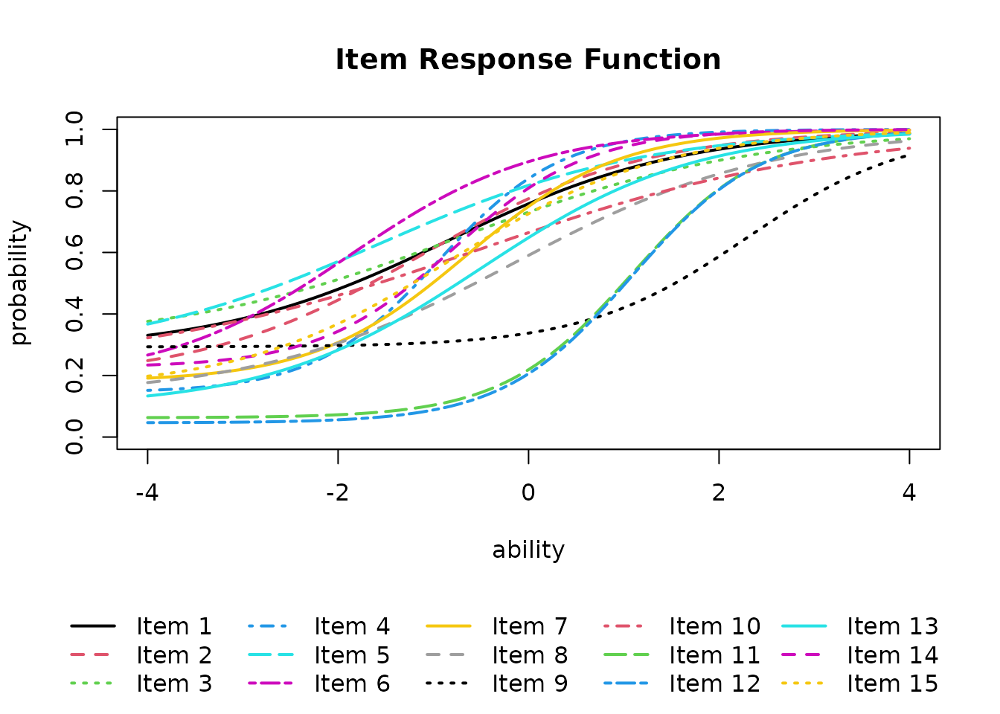
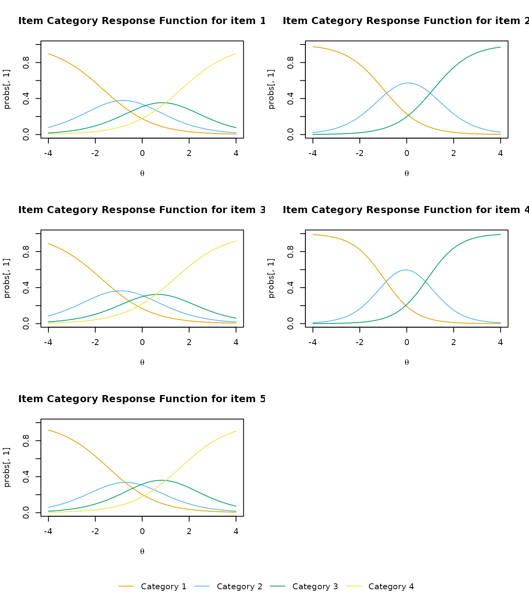

IRT for Binary Data
The IRT() function estimates item parameters using
logistic models. It supports 2PL, 3PL, and 4PL models via the
model option.
result.IRT <- IRT(J15S500, model = 3)
result.IRT
#> Item Parameters
#> slope location lowerAsym PSD(slope) PSD(location) PSD(lowerAsym)
#> Item01 0.818 -0.834 0.2804 0.182 0.628 0.1702
#> Item02 0.860 -1.119 0.1852 0.157 0.471 0.1488
#> Item03 0.657 -0.699 0.3048 0.162 0.798 0.1728
#> Item04 1.550 -0.949 0.1442 0.227 0.216 0.1044
#> Item05 0.721 -1.558 0.2584 0.148 0.700 0.1860
#> Item06 1.022 -1.876 0.1827 0.171 0.423 0.1577
#> Item07 1.255 -0.655 0.1793 0.214 0.289 0.1165
#> Item08 0.748 -0.155 0.1308 0.148 0.394 0.1077
#> Item09 1.178 2.287 0.2930 0.493 0.423 0.0440
#> Item10 0.546 -0.505 0.2221 0.131 0.779 0.1562
#> Item11 1.477 1.090 0.0628 0.263 0.120 0.0321
#> Item12 1.479 1.085 0.0462 0.245 0.115 0.0276
#> Item13 0.898 -0.502 0.0960 0.142 0.272 0.0858
#> Item14 1.418 -0.788 0.2260 0.248 0.291 0.1252
#> Item15 0.908 -0.812 0.1531 0.159 0.383 0.1254
#>
#> Item Fit Indices
#> model_log_like bench_log_like null_log_like model_Chi_sq null_Chi_sq
#> Item01 -262.979 -240.190 -283.343 45.578 86.307
#> Item02 -253.405 -235.436 -278.949 35.937 87.025
#> Item03 -280.640 -260.906 -293.598 39.468 65.383
#> Item04 -204.884 -192.072 -265.962 25.623 147.780
#> Item05 -232.135 -206.537 -247.403 51.196 81.732
#> Item06 -173.669 -153.940 -198.817 39.459 89.755
#> Item07 -250.905 -228.379 -298.345 45.053 139.933
#> Item08 -314.781 -293.225 -338.789 43.111 91.127
#> Item09 -321.920 -300.492 -327.842 42.856 54.700
#> Item10 -309.318 -288.198 -319.850 42.240 63.303
#> Item11 -248.409 -224.085 -299.265 48.647 150.360
#> Item12 -238.877 -214.797 -293.598 48.160 157.603
#> Item13 -293.472 -262.031 -328.396 62.882 132.730
#> Item14 -223.473 -204.953 -273.212 37.040 136.519
#> Item15 -271.903 -254.764 -302.847 34.279 96.166
#> model_df null_df NFI RFI IFI TLI CFI RMSEA AIC CAIC
#> Item01 11 13 0.472 0.376 0.541 0.443 0.528 0.079 23.578 -33.783
#> Item02 11 13 0.587 0.512 0.672 0.602 0.663 0.067 13.937 -43.424
#> Item03 11 13 0.396 0.287 0.477 0.358 0.457 0.072 17.468 -39.893
#> Item04 11 13 0.827 0.795 0.893 0.872 0.892 0.052 3.623 -53.737
#> Item05 11 13 0.374 0.260 0.432 0.309 0.415 0.086 29.196 -28.164
#> Item06 11 13 0.560 0.480 0.639 0.562 0.629 0.072 17.459 -39.902
#> Item07 11 13 0.678 0.620 0.736 0.683 0.732 0.079 23.053 -34.308
#> Item08 11 13 0.527 0.441 0.599 0.514 0.589 0.076 21.111 -36.250
#> Item09 11 13 0.217 0.074 0.271 0.097 0.236 0.076 20.856 -36.505
#> Item10 11 13 0.333 0.211 0.403 0.266 0.379 0.075 20.240 -37.121
#> Item11 11 13 0.676 0.618 0.730 0.676 0.726 0.083 26.647 -30.713
#> Item12 11 13 0.694 0.639 0.747 0.696 0.743 0.082 26.160 -31.200
#> Item13 11 13 0.526 0.440 0.574 0.488 0.567 0.097 40.882 -16.479
#> Item14 11 13 0.729 0.679 0.793 0.751 0.789 0.069 15.040 -42.321
#> Item15 11 13 0.644 0.579 0.727 0.669 0.720 0.065 12.279 -45.082
#> BIC
#> Item01 -22.783
#> Item02 -32.424
#> Item03 -28.893
#> Item04 -42.737
#> Item05 -17.164
#> Item06 -28.902
#> Item07 -23.308
#> Item08 -25.250
#> Item09 -25.505
#> Item10 -26.121
#> Item11 -19.713
#> Item12 -20.200
#> Item13 -5.479
#> Item14 -31.321
#> Item15 -34.082
#>
#> Model Fit Indices
#> value
#> model_log_like -3880.769
#> bench_log_like -3560.005
#> null_log_like -4350.217
#> model_Chi_sq 641.528
#> null_Chi_sq 1580.424
#> model_df 165.000
#> null_df 195.000
#> NFI 0.594
#> RFI 0.520
#> IFI 0.663
#> TLI 0.594
#> CFI 0.656
#> RMSEA 0.076
#> AIC 311.528
#> CAIC -548.882
#> BIC -383.882The estimated ability parameters for each examinee are included in the returned object:
head(result.IRT$ability)
#> ID EAP PSD
#> 1 Student001 -0.75526633 0.5805696
#> 2 Student002 -0.17398724 0.5473604
#> 3 Student003 0.01382331 0.5530501
#> 4 Student004 0.57628203 0.5749113
#> 5 Student005 -0.97449549 0.5915605
#> 6 Student006 0.85232920 0.5820541Plot Types
IRT provides several plot types:
- IRF: Item Response Function (Item Characteristic Curves)
- IIC: Item Information Curves
- TRF: Test Response Function
- TIC: Test Information Curve
Items can be specified using the items argument. The
layout is controlled by nr (rows) and nc
(columns).
plot(result.IRT, type = "IRF", items = 1:6, nc = 2, nr = 3)
plot(result.IRT, type = "IRF", overlay = TRUE)
plot(result.IRT, type = "IIC", items = 1:6, nc = 2, nr = 3)
plot(result.IRT, type = "TRF")
plot(result.IRT, type = "TIC")GRM: Graded Response Model
The Graded Response Model (Samejima, 1969) extends IRT to polytomous
response data. It can be applied using the GRM()
function.
result.GRM <- GRM(J5S1000)
#> Parameters: 18 | Initial LL: -6252.352
#> initial value 6252.351598
#> iter 10 value 6032.463982
#> iter 20 value 6010.861094
#> final value 6008.297278
#> converged
result.GRM
#> Item Parameter
#> Slope Threshold1 Threshold2 Threshold3
#> V1 0.928 -1.662 0.0551 1.65
#> V2 1.234 -0.984 1.1297 NA
#> V3 0.917 -1.747 -0.0826 1.39
#> V4 1.479 -0.971 0.8901 NA
#> V5 0.947 -1.449 0.0302 1.62
#>
#> Item Fit Indices
#> model_log_like bench_log_like null_log_like model_Chi_sq null_Chi_sq
#> V1 -1297.780 -1086.461 -1363.667 422.638 554.411
#> V2 -947.222 -840.063 -1048.636 214.317 417.145
#> V3 -1307.044 -1096.756 -1373.799 420.575 554.085
#> V4 -936.169 -819.597 -1062.099 233.142 485.003
#> V5 -1308.149 -1096.132 -1377.883 424.033 563.502
#> model_df null_df NFI RFI IFI TLI CFI RMSEA AIC CAIC BIC
#> V1 46 45 0.238 0.254 0.259 0.277 0.261 0.091 330.638 58.881 104.881
#> V2 31 30 0.486 0.503 0.525 0.542 0.526 0.077 152.317 -30.823 0.177
#> V3 46 45 0.241 0.257 0.263 0.280 0.264 0.090 328.575 56.819 102.819
#> V4 31 30 0.519 0.535 0.555 0.570 0.556 0.081 171.142 -11.998 19.002
#> V5 46 45 0.248 0.264 0.270 0.287 0.271 0.091 332.033 60.277 106.277
#>
#> Model Fit Indices
#> value
#> model_log_like -5796.363
#> bench_log_like -4939.010
#> null_log_like -6226.083
#> model_Chi_sq 1714.706
#> null_Chi_sq 2574.146
#> model_df 200.000
#> null_df 195.000
#> NFI 0.334
#> RFI 0.351
#> IFI 0.362
#> TLI 0.379
#> CFI 0.363
#> RMSEA 0.087
#> AIC 1314.706
#> CAIC 133.155
#> BIC 333.155GRM supports similar plot types as IRT:
plot(result.GRM, type = "IRF", nc = 2)
plot(result.GRM, type = "IIF", nc = 2)
plot(result.GRM, type = "TIF")